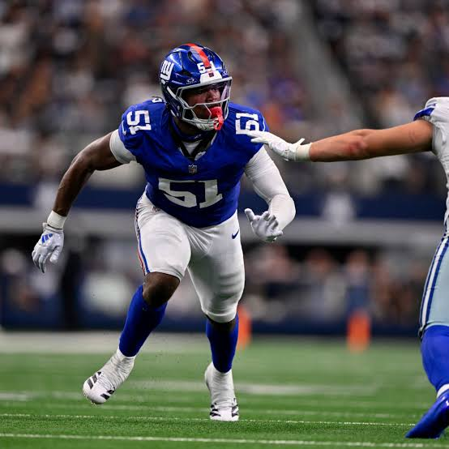
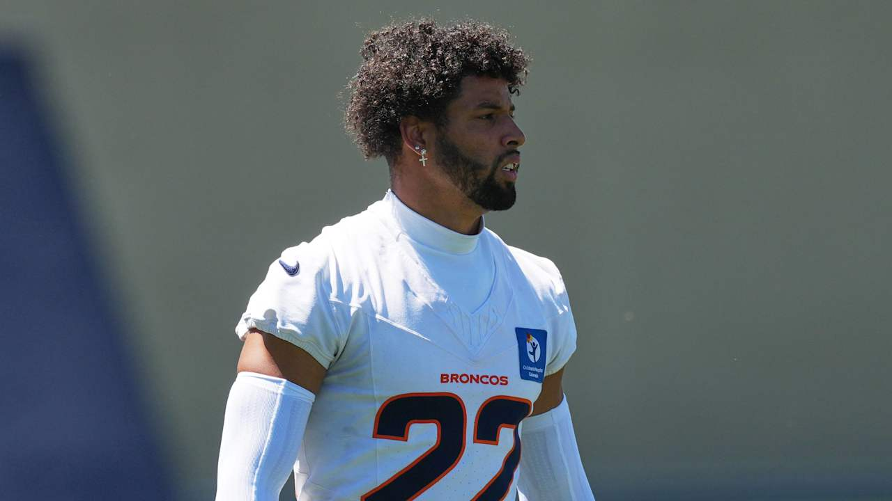

Carlos José Villanueva Ramos
📅 Próximamente
🏀 Noticias de la NBA
Próximamente — Análisis y noticias de la NBA desde la perspectiva de un fanático de los New York Knicks. 🗽
Análisis y comentarios de NBA, NFL, NHL y MLB desde el punto de vista de un fanático, escritos desde Cartago, Costa Rica 🇨🇷
Carlos José Villanueva Ramos
📅 Próximamente
Próximamente — Análisis y noticias de la NBA desde la perspectiva de un fanático de los New York Knicks. 🗽
Carlos José Villanueva Ramos
📅 9 agosto 2026
🏈 El plan ofensivo: El nuevo coordinador ofensivo de los Eagles, Sean Mannion, confirmó que no abandonará el famoso Tush Push (empujón de trasero), una jugada que les dio un éxito brutal en situaciones de corto yardaje rumbo al Super Bowl LIX
El motor del equipo: Tras una temporada 2025 complicada donde la ofensiva cayó al puesto 24, Mannion busca revivir el ataque terrestre centrando toda la estrategia en el corredor estrella Saquon Barkley, quien fue el Jugador Ofensivo del Año en 2024.
El objetivo: Utilizar la potencia de Barkley y el juego terrestre para abrir el panorama aéreo y devolverle la identidad dominante a la ofensiva de los Eagles.

Carlos José Villanueva Ramos
📅 9 de agosto 2026
El linebacker de segundo año de los Giants, Abdul Carter (selección número 3 del Draft 2025), se ha fijado la meta de ganar el premio al Jugador Defensivo del Año de la AP.
El nuevo entrenador en jefe de Nueva York, John Harbaugh, elogió públicamente la ética de trabajo y el liderazgo de Carter durante el campamento de entrenamiento, asegurando que está cumpliendo con todo lo que prometió.
A pesar de un año de novato complicado en 2025 (donde el equipo tuvo récord de 4-13 y Carter lidió con algunos problemas de disciplina), el defensivo lideró a los novatos de la liga con 72 presiones al mariscal de campo, demostrando un potencial generacional.

Carlos José Villanueva Ramos
📅 9 de agosto 2026
Situación inesperada: Con el pateador titular Wil Lutz en Canton presenciando la inducción de Drew Brees al Salón de la Fama, los Denver Broncos tuvieron que activar su "Plan B" durante la práctica del sábado. 🏈
El héroe inesperado: El safety de 28 años, Brandon Jones, asumió el rol de pateador y sorprendió a todos al conectar 3 de 4 intentos de gol de campo, incluidos dos seguidos desde la yarda 35.
Pasado futbolero: Jones, quien jugó fútbol en su juventud y bromea con hacer una prueba en la MLS en el futuro, le dio al coordinador de equipos especiales, Darren Rizzi, la tranquilidad de saber que cuentan con un pateador de emergencia confiable.

Carlos José Villanueva Ramos
📅 Próximamente
Próximamente — Espacio reservado para los mejores análisis, partidos y novedades del hockey sobre hielo de la NHL. 🏒❄️
Carlos José Villanueva Ramos
📅 8 Mayo 2026
Los Cubs han tenido una impresionante racha ganadora en Wrigley Field, logrando 15 victorias consecutivas, la más larga desde 1935.
El equipo ganó 8-3 contra los Reds, completando una barrida de cuatro juegos. Esta racha es significativa, pues es la primera vez en 91 años que alcanzan dos rachas de al menos siete partidos invictos en casa en una misma temporada.
El pitcher Shota Imanaga mencionó una energía especial en Wrigley que siente durante los partidos, destacando la importancia del apoyo de los aficionados.
Con esta victoria, los Cubs tienen un récord de 19-3 en sus últimos 22 juegos y 18-5 en casa esta temporada.
En el partido, Michael Conforto brilló en su primer juego como titular desde el 29 de abril, bateando 3-3 y abriendo el marcador con un jonrón, con un promedio de bateo de .361 en la temporada.
Los Cubs ahora están solo detrás de los Yankees y los Braves en carreras anotadas en la liga. 🔥
Carlos José Villanueva Ramos
📅 8 Mayo 2026
Slade Cecconi mostró un buen rendimiento al permitir solo dos carreras en 5⅓ entradas en el partido contra los Royals, donde Cleveland ganó 8-5 y empató la serie de cuatro juegos.
Cecconi buscaba mejorar su precisión en los lanzamientos secundarios, un objetivo que logró durante el juego. El entrenador Stephen Vogt destacó la importancia de perfeccionar estos lanzamientos con efecto.
El juego vio a los Guardians aumentar su ventaja a 4-0.
Carlos José Villanueva Ramos
📅 Próximamente
Próximamente — Mi podcast sobre la NFL, con análisis, comentarios y las noticias más importantes de la liga desde mi perspectiva como fanático.
Descripción corta del episodio.
Carlos José Villanueva Ramos es un desarrollador fullstack en formación, nacido en Cartago, Costa Rica, y además de que estudia y escribe artículos sobre tecnología, también es amante de los deportes, aficionado a la MLB, NBA, NHL y NFL. Ese deseo por esos deportes lo llevó a crear esta página web, para compartir sobre los deportes que lo apasionan.
En La Frecuencia de Carlos Villanueva Dev respetamos tu privacidad. Esta página no recopila datos personales de sus visitantes.
No almacenamos nombres, correos electrónicos, ni ningún otro dato personal de los visitantes.
Esta página contiene enlaces a redes sociales como GitHub, LinkedIn y YouTube. Al hacer clic en ellos, salís de nuestro sitio y quedás sujeto a las políticas de privacidad de dichas plataformas.
Si tenés alguna consulta sobre esta política, podés escribirnos a través de nuestras redes sociales.
Última actualización: Mayo 2026